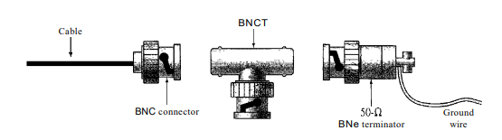

ALUMNO: mendoza kauil carlos eduardo
MATERIA: fundamentos de telecomunicación
Actividad: #887
¿Qué es un medio de transmición?
Un medio de transmisión se puede definir de forma general como cualquier cosa que pueda transportar información desde una fuente hasta un destino.
Funcionamiento
Estas señales se transmiten de un dispositivo a otro en forma de energía electromagnética, que se propaga a través de medios de transmisión.
MEDIOS GUIADOS
son aquellos que proporcionan un conducto de un dispositivo a otro de manera fisica.
TIPOS
PAR TRENZADO
consiste en dos conductores (normalmente de cobre), cada uno con su propio aislamiento plástico, trenzados entre sí. Al trenzar los que se mantiene un equilibrio, lo que resulta que las señales no deseadas se cancelan en su mayoría.
EJEMPLO:
CATEGORIAS
La Electronic Industries Association (EIA) ha desarrollado estándares para clasificar el cable de par trenzado no apantallado en siete categorías partiendo de 1 como nivel mas bajo y 7 como el nivel mas alto. .
| Categoria | Especificación | Uso |
|---|---|---|
| 1 | Par trenzado no apantallado usado en teléfonos | Teléfono |
| 2 | Par trenzado no apantallado originalmente usado en líneas T | Líneas T |
| 3 | CAT 2 mejorado usado en redes LAN | RED LAN |
| 4 | CAT 3 mejorado usado en redes Token Ring | RED LAN |
| Categoria | Especificación | Uso |
|---|---|---|
| 5 | Cable de calibre 24 AWG con revestimiento y funda exterior | RED LAN |
| 6 | El cable debe ser probado a una tasa de datos de 200 Mbps | RED LAN |
| 7 | A veces llamado SSTP está envuelto individualmente en una funda metálica helicoidal, seguido de una funda exterior metálica adicional. | RED LAN |
CONECTORES
El conector UTP más común es el RJ45, es un conector con llave, lo que significa que solo se puede insertar de una manera.
APLICACIONES
Aplicaciones princiapales:
COAXIAL
está diseñado para transportar señales de frecuencias más altas que las del cable de par trenzado, en parte debido a sus diferencias de construcción. En lugar de tener dos hilos, el cable coaxial cuenta con un conductor central de alambre sólido o trenzado (generalmente de cobre) rodeado por una capa aislante.
ESTRUCTURA
Ejemplo de cable coaxial y su estructura
CATEGORIAS
se categorizan mediante sus clasificaciones de radio gobierno (RG). Cada número RG indica un conjunto único de especificaciones físicas, incluyendo el calibre del conductor interno, el grosor y el tipo del aislante interno, la construcción del blindaje, y el tamaño y tipo de la cubierta exterior
| Categoria | Impedancia | Uso |
|---|---|---|
| RG-59 | 75 Ω | Cable TV |
| RG-58 | 50 Ω | Thin Ethernet |
| RG-ll | 50 Ω | Thick Ethernet |
CONECTORES
Para conectar un cable coaxial a los dispositivos, se necesitan conectores coaxiales.
Hay tres tipo de conectores que son: el conector BNC, el conector BNC en T y el terminador BNC.
| Conector: | uso |
|---|---|
| BNC | Se utiliza para conectar el extremo del cable a un dispositivo, como un televisor. |
| BNC en T | se usa en redes Ethernet para crear una ramificación hacia una conexión de una computadora u otro dispositivo. |
| BNC | Se coloca en el extremo del cable para evitar la reflexión de la señal. |
Ejemplo:
APLICACIONES
algunas aplicacion principales son:
FIBRA OPTICA
Las fibras ópticas utilizan la reflexión para guiar la luz a través de un canal. Un núcleo de vidrio o plástico está rodeado por una cubierta de vidrio o plástico menos denso.
Ejemplo
un ejemplo de fibra optica con su estructura
MODOS DE PROPAGACIÓN
La tecnología actual admite dos modos (multimodo y monomodo) para propagar luz a lo largo de canales ópticos, cada uno de los cuales requiere fibras con diferentes características físicas. El modo multimodo se puede implementar en dos formas: índice de paso o índice graduado.
MODOS DE PROPAGACIÓN
TAMAÑO DE LAS FIBRAS
Las fibras ópticas se definen por la relación entre el diámetro de su núcleo y el diámetro de su revestimiento, ambos expresados en micrómetros.
algunas de las mas comunes:
| Tipo | Nucleo(um) | Revestimiento(um) | Modo |
|---|---|---|---|
| 50125 | 50.0 | 125 | Multimodo, índice gradual |
| 62.51125 | 62.5 | 125 | Multimodo, índice gradual |
| 100/125 | 100.0 | 125 | Multimodo, índice gradual |
| 7/125 | 7.0 | 125 | Mononodo |
| Tipo | Nucleo(um) | Revestimiento(um) | Modo |
|---|---|---|---|
| 7/125 | 7.0 | 125 | Mononodo |
COMPOSICIÓN
La cubierta exterior está hecha de PVC o Teflón. Dentro de la cubierta hay hebras de Kevlar para fortalecer el cable. El Kevlar es un material resistente utilizado en la fabricación de chalecos antibalas. Debajo del Kevlar, hay otro recubrimiento de plástico para amortiguar la fibra. La fibra se encuentra en el centro del cable y está compuesta de revestimiento y núcleo.CONECTORES
Hay tres tipos de conectores que son:
APLICACIONES
MEDIOS NO GUIADOS
Los medios no guiados transportan ondas electromagnéticas sin utilizar un conductor físico.
Las señales se transmiten generalmente a través del espacio libre y, por lo tanto, están disponibles para cualquiera que tenga un dispositivo capaz de recibirlas.
ESPECTRO ELECTROMAGNETICO
Los medios inalámbricos hacen uso una parte del espacio electromagnético para poder compartir la información que abarca de 3 kHz a 900 THz

MEDIOS DE PROPAGACIÓN
Existen 3 manera de propagación que son:
propagacion terreste
las ondas de radio viajan a través de la porción más baja de la atmósfera, siguiendo la superficie de la Tierra.
propagacion inosoferica
las ondas de radio de mayor frecuencia se transmiten hacia arriba en la ionosfera (la capa de la atmósfera donde las partículas existen como iones), donde son reflejadas de regreso a la Tierra.
propagacion linea de vista
las ondas de radio de mayor frecuencia se transmiten hacia arriba en la ionosfera (la capa de la atmósfera donde las partículas existen como iones), donde son reflejadas de regreso a la Tierra.
BANDAS
La sección del espectro electromagnético definida como ondas de radio y microondas se divide en ocho rangos, llamados bandas, cada una de las cuales está regulada por autoridades gubernamentales. Estas bandas se clasifican desde muy baja frecuencia (VLF) hasta frecuencia extremadamente alta (EHF).
Tabla de bandas
| Banda | frecuencia | propagacion | Aplicaciones |
|---|---|---|---|
| VLF(muy baja frecuencia) | 3-30 kHz | Terres | Navegación por radio de largo alcance |
| LF(baja frecuencia) | 30-300 kHz | Terres | Balizas de radio y localizadores de navegación |
| Banda | frecuencia | propagacion | Aplicaciones |
|---|---|---|---|
| MF(frecuencia media) | 300kHz - 3MHz | Inoesferica | Radio AM |
| HF(frecuencia alta) | 3-30 MHz | Inoesferica | Banda ciudadana (CB), comunicación naval/aérea |
| Banda | frecuencia | propagacion | Aplicaciones |
|---|---|---|---|
| VHF (muy alta frecuencia) | 30-300 MHz | Ionosférica y línea de vista | TV VHF, radio FM |
| UHF (ultra alta frecuencia) | 300 MHz-3 GHz | Línea de vista | TV UHF, teléfonos celulares, buscapersonas, satélites |
| Banda | frecuencia | propagacion | Aplicaciones |
|---|---|---|---|
| SHF (frecuencia superalta) | 3-30 GHz | línea de vista | Comunicación por satélite |
| EHF (frecuencia extremadamente alta) | 30-300 GHz | Línea de vista | Radar, satélites |
ONDAS DE RADIO
Aunque no existe una delimitación precisa entre ondas de radio y microondas, generalmente se llaman ondas de radio a las ondas electromagnéticas con frecuencias entre 3 kHz y 1 GHzs
MODO DE PROPAGACIÓN
Las ondas de radio, en su mayoría, son omnidireccionales. Cuando una antena transmite ondas de radio, estas se propagan en todas las direcciones, lo cual significa que las antenas de envío y recepción no necesitan estar alineadas.
USO DE ANTENAS
Las ondas de radio usan antenas omnidireccionales que envían señales en todas las direcciones. Según la longitud de onda, la potencia y el propósito de la transmisión, existen varios tipos de antenas
APLICACIONES
Principalmente la transmisión múltiple o multicasting, en la que hay un emisor y múltiples receptores. Ejemplos de multicasting son la radio AM y FM, la televisión, la radio marítima, los teléfonos inalámbricos y los servicios de buscapersonas.
MICROONDAS
Las ondas electromagnéticas con frecuencias entre 1 y 300 GHz se llaman microondas. Las microondas son unidireccionales.
MODO DE PROPAGACION
La propagación de microondas es en línea recta, lo que significa que las antenas emisoras y receptoras necesitan estar alineadas
USO DE ANTENAS
Las microondas requieren antenas unidireccionales que envían señales en una sola dirección. Se utilizan dos tipos de antenas para las comunicaciones de microondas: el plato parabólico y la antena de bocina
APLICACIONES
Las microondas, debido a sus propiedades unidireccionales, son muy útiles cuando se necesita comunicación unicast (de uno a uno) entre el emisor y el receptor. Se utilizan en teléfonos celulares, redes de satélites y redes LAN inalámbricas.
INFRAROJO
Las ondas infrarrojas, con frecuencias de 300 GHz a 400 THz (longitudes de onda de 1 mm a 770 nm), se utilizan para comunicaciones de corto alcance.
APLICACIONES
La banda de infrarrojo, que abarca casi 400 THz, tiene un gran potencial para la transmisión de datos, permitiendo una tasa de datos muy alta. La Infrared Data Association (IrDA) ha establecido estándares para el uso de ondas infrarrojas en la comunicación entre dispositivos como teclados, ratones, PCs y impresoras.